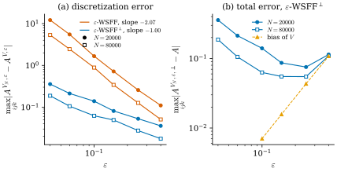

48.5 Approximate Weak Second Fundamental Form
Goals
- G-linear variation과 mass를 kernel로 흐려 어떤 varifold에서도 계산되는 \(\beta^{V,\varepsilon}\), \(c^{V,\varepsilon}\), 그리고 \(\varepsilon\)-WSFF를 정의할 수 있다.
- \(\varepsilon\)-WSFF\(^\perp\)의 닫힌 꼴과 그 “plane field의 kernel 차분 몫” 꼴 (48.1.2)을 유도할 수 있다.
- 두 수렴 정리(Theorem 6.8과 6.11)의 가정과 속도(\(1/\varepsilon^2\) 대 \(1/\varepsilon\))를 말하고, 그 차이가 어디서 오는지 test function의 Lipschitz 상수로 설명할 수 있다.
- sphere 위의 point cloud에서 두 속도를 수치로 확인하고(Figure 48.5.1), discretization 오차와 smoothing bias 사이의 균형으로 \(\varepsilon\)을 고르는 이유를 설명할 수 있다.
Prerequisites
- Section 48.3, Section 48.4: WSFF, WSFF\(^\perp\), (48.4.5)
- Proposition 47.3.3(흐린 first variation의 표현), Definition 47.4.1(approximate mean curvature), Theorem 47.4.8과 Theorem 47.4.13(두 수렴 정리), Proposition 47.5.2(natural kernel pair)
- Definition 46.7.6, Definition 47.2.1: bounded Lipschitz distance \(\Delta^{1,1}\)과 국소판
Motivation
Example 48.4.12에서 polygon의 G-linear variation은 vertex의 Dirac mass뿐이어서 WSFF가 \(0\)이었다. point cloud도 같다. 정보는 원자에 집중되어 있고 density가 없다. Chapter 47은 first variation에서 같은 문제를 만나 kernel로 흐려서 풀었다. 이 절은 그 방법을 G-linear variation에 그대로 쓴다. 새로 생기는 일은 두 가지다. linear system의 coefficient \(c\)도 흐려야 하고, mean curvature에서 보았던 “normal로 project하면 속도가 좋아진다”는 현상이 tensor에서는 WSFF\(^\perp\)의 형태로 나타난다.
Approximation by Mollification
논문은 세 kernel profile \(\rho, \xi, \eta\colon[0, \infty) \to [0, \infty)\)을 쓴다. 모두 \(C^1\)이고 \(t \ge 1\)에서 \(0\)이다. \(\rho\)는 감소하고 \(\rho'(0) = 0\), \(\int_{\R^n}\rho(\abs{x})\,dx = 1\)이며, \(\xi\)는 \(0 \lt t \lt 1\)에서 양수이고 \(\int_{\R^n}\xi(\abs{x})\,dx = 1\)이다. \(\rho_\varepsilon(x) = \varepsilon^{-n}\rho(\abs{x}/\varepsilon)\) 등으로 줄이고(논문의 (6.1)), 상수 \(C_\rho\), \(C_\xi\)는 (47.4.1)과 같다(논문의 (6.2)). \(\rho\)는 G-linear variation을, \(\xi\)는 mass를, \(\eta\)는 mean projection을 흐린다. \(\Omega_\varepsilon = \{x \in \Omega : \mathrm{dist}(x, \partial\Omega) \gt \varepsilon\}\)이다.
Definition 48.5.1 (regularized G-linear variation). \(V\)가 \(\Omega\) 위의 \(d\)-varifold이고 \(\varepsilon \gt 0\)이라 하자. \(\varphi \in C^1_c(\Omega_\varepsilon)\)에 대해
로 정한 \(\delta_{ijk}V*\rho_\varepsilon\)을 \(V\)의 regularized G-linear variation(정칙화한 G-선형 변분)이라 한다. [BLM22, Def 6.1, (6.3)]
Proposition 48.5.2 (representation). \(\delta_{ijk}V*\rho_\varepsilon\)은 \(\Omega_\varepsilon\) 위의 연속 함수
로 표현되고 \(L^1_{\mathrm{loc}}(\Omega_\varepsilon)\)에 속한다. \(\delta_{ijk}V\)가 locally bounded가 아니어도 그렇다. [BLM22, Prop 6.2, (6.4), Remark 6.3]
Proof. \(\nabla^S(\varphi*\rho_\varepsilon)(y) = \int\varphi(x)\nabla^S\rho_\varepsilon(y - x)\,dx\)를 (48.5.1)에 넣고 Fubini–Tonelli로 적분 순서를 바꾸면 \(\int\varphi(x)\,(\cdots)\,dx\)의 꼴이 되고, 괄호 안이 (48.5.2)다. \(\nabla\rho_\varepsilon\)이 bound되어 있으므로 \(V\)의 mass가 국소적으로 유한하면 \(L^1_{\mathrm{loc}}\)이다. \(\square\)
first variation의 경우(Proposition 47.3.3)와 같은 증명이다. 논문은 이것을 [BLM17]의 “Proposition 4.2”의 단순한 변형이라 적는다(Conventions의 번호 주의). 이제 흐린 양의 비를 density로 쓴다.
Definition 48.5.3 (approximate density and mean projection). \(V = \norm{V} \otimes \{\nu_x\}_x\)와 \(\varepsilon \gt 0\)에 대해 \(\norm{V}\)-a.e. \(x \in \Omega_\varepsilon\)에서
로 정한다. [BLM22, (6.5)]
\(\beta^{V,\varepsilon}\)은 “흐린 G-linear variation을 흐린 mass로 나눈 것”, 곧 Radon–Nikodym density \(\beta = -d(\delta_{ijk}V)/d\norm{V}\)의 근사다. 앞의 상수 \(C_\xi/C_\rho\)는 평평한 plane에서 \(\norm{V}*\rho_\varepsilon/\norm{V}*\xi_\varepsilon \to C_\rho/C_\xi\)인 것을 보정한다. \(c^{V,\varepsilon}(x)\)는 반지름 \(\varepsilon\) 안에 있는 plane들의 \(\eta\)-가중 평균이다. 곧
\[ dW_x(y, S) = \frac{\eta_\varepsilon(y - x)\,dV(y, S)}{\int\eta_\varepsilon(z - x)\,dV(z, P)} \]
로 정한 probability measure \(W_x\)에 대해 \(c^{V,\varepsilon}(x) = \int S\,dW_x(y, S)\)이다. 그래서 Proposition 48.3.6의 성질을 모두 갖고 Lemma 48.3.5가 적용된다.
Proposition 48.5.4 (the structural identities survive). \(\vec H^{V,\varepsilon} = -\tfrac{C_\xi}{C_\rho}\,\delta V*\rho_\varepsilon/\norm{V}*\xi_\varepsilon\)를 Definition 47.4.1의 approximate mean curvature라 하면
이다. [BLM22, (6.6)]
증명은 Exercise 48.5.1이다. 두 kernel을 따로 두는 이유와 그 선택은 Chapter 47과 같다. 논문은 [BLM17] §5의 계산이 시사하는 natural kernel pair \(n\xi(s) = -s\rho'(s)\)(논문의 (6.7), Definition 47.5.1)가 수치적으로 효과적이었다고 쓰고(Remark 6.4), §7의 실험에서 이것을 쓴다. 이때 \(C_\xi/C_\rho = d/n\)이다(Proposition 47.5.2).
이제 linear system (48.3.9)의 \(\beta^V\), \(c^V\)를 흐린 값으로 바꾼다.
Definition 48.5.5 (approximate second fundamental form, \(\varepsilon\)-WSFF). \(\varepsilon \gt 0\)과 \(\norm{V}\)-a.e. \(x \in \Omega_\varepsilon\)에서 system
의 유일한 해
를 \(V\)의 approximate second fundamental form(근사 제2기본형식) 또는 \(\varepsilon\)-WSFF라 한다. \(B^{k,\varepsilon}_{ij} = \tfrac12(A^{V,\varepsilon}_{ijk} + A^{V,\varepsilon}_{jik} - A^{V,\varepsilon}_{kij})\)도 같은 이름으로 부른다. [BLM22, (6.8), Def 6.5, (6.9)]
\(\varepsilon\)-WSFF는 bounded variations가 없는 varifold에서도 정의된다(논문의 Remark 6.6). point cloud에서도, polygon에서도, 흐린 데이터에서도 계산되는 식이다. 남은 질문은 이것이 맞는 값으로 가는가이다. 질문은 두 층이다. 하나는 고정된 smooth한 \(V\)에서 \(\varepsilon \to 0\)일 때(consistency)이고, 다른 하나는 데이터 \(V_h\)가 \(V\)에 가까워지면서 \(\varepsilon_h \to 0\)일 때(convergence)다.
Consistency
Proposition 48.5.6 (consistency). \(V\)가 locally bounded variations를 갖는 rectifiable \(d\)-varifold이면, \(\norm{V}\)-a.e. \(x\)에서 \(\varepsilon\)이 충분히 작을 때 \(\beta^{V,\varepsilon}(x)\), \(c^{V,\varepsilon}(x)\), \(A^{V,\varepsilon}(x)\), \(B^{V,\varepsilon}(x)\)가 정의되고 \(\varepsilon \to 0\)이면 각각 \(\beta^V(x)\), \(c^V(x)\), \(A^V(x)\), \(B^V(x)\)로 수렴한다. 또 상수 \(C_1, C_2 \gt 0\)이 있어
Proof sketch. Theorem 47.4.3의 증명과 같다. \(\delta_{ijk}V = -\beta\norm{V} + (\delta_{ijk}V)_s\)를 넣으면 \(\abs{\beta^\varepsilon_{ijk}(x) - \beta_{ijk}(x)}\)이 세 항으로 나뉜다(논문의 (6.11)). \(\beta(y) - \beta(x)\)를 kernel로 평균한 항(\(x\)가 \(\beta\)의 Lebesgue point이면 \(0\)으로 간다), 흐린 mass의 비 \(\norm{V}*\rho_\varepsilon/\norm{V}*\xi_\varepsilon\)와 \(C_\rho/C_\xi\)의 차이(rectifiable이면 \(\varepsilon^{n-d}\norm{V}*\rho_\varepsilon(x) \to C_\rho\theta(x)\), 논문의 (6.12)), singular part의 항(singular measure의 \(\norm{V}\)에 대한 density는 a.e. \(0\))이다. \(c^{V,\varepsilon}\)도 \(\beta\) 자리에 \(\int S\,d\nu_x\)를 넣으면 같다. (48.5.7)은 (48.3.6)의 두 해를 빼서 얻는다. \(u = (I + c)^{-1}\vec H\), \(u^\varepsilon = (I + c^\varepsilon)^{-1}\vec H^\varepsilon\)이라 하면 \((I + c^\varepsilon)(u^\varepsilon - u) + (c - c^\varepsilon)u = \vec H^\varepsilon - \vec H\)이고, \(\norm{(I + c^\varepsilon)^{-1}} \le C_0\), \(\abs{c_{jk}} \le 1\), \(\vec H_i = \sum_q\beta_{qiq}\)를 쓰면 된다(논문의 (6.13), (6.14)). \(\square\)
이 명제는 속도를 말하지 않는다. 고정된 \(V\)에서 \(\varepsilon\)을 줄이면 맞는 값으로 간다는 것뿐이다. 이 오차(smoothing bias)는 sphere의 \(\varepsilon\)-WSFF\(^\perp\)에서 \(\varepsilon^2\) 정도다(Figure 48.5.1(b)의 주황 선, 우리의 실험). 일반적인 속도는 논문에 없다.
The Orthogonal Version
수렴 정리로 가기 전에 논문은 smooth surface에서 성립하는 분해를 하나 적는다. \(V = v(M, 1)\)이면
(논문의 (6.20))이다. 첫째 항에서는 tangent plane이 Lipschitz이면 \(P(y) - P(x) = O(\varepsilon)\)이므로 test function의 Lipschitz 상수에서 \(\varepsilon\)을 하나 번다. 둘째 항은 approximate mean curvature에 \(P(x)_{jk}\)를 곱한 것이고, Theorem 47.4.13처럼 \(x\)의 normal space로 project하면 \(\varepsilon\)을 하나 번다. 이 분해에 맞춘 \(\beta\)의 수정이 바로 Definition 48.3.11의 \(\beta^\perp\)이었다. 그 근사판은 다음과 같다.
Definition 48.5.7 (approximate orthogonal weak second fundamental form, \(\varepsilon\)-WSFF\(^\perp\)). \(x \in \Omega\)에서
로 두고, (48.3.5)를 \(b = \beta^{V,\varepsilon,\perp}(x)\), \(c = c^V(x)\)로 푼 해 \(A^{V,\varepsilon,\perp}(x)\)를 \(V\)의 approximate orthogonal weak second fundamental form(근사 직교 약한 제2기본형식) 또는 \(\varepsilon\)-WSFF\(^\perp\)라 한다. 해는
(48.5.10)은 Proposition 48.4.8의 계산을 그대로 따른다. 두 가지를 짚어 두자. 첫째, coefficient는 흐린 \(c^{V,\varepsilon}(x)\)가 아니라 \(c^V(x)\) 그대로다(논문의 Remark 6.10). 흐린 값을 쓰면 Theorem 6.8의 수렴만 그대로 얻고, Theorem 6.11의 가정 아래서는 흐릴 필요가 없다는 것이 저자들의 설명이다. point cloud의 원자에서 \(c^V(x_l) = P_l\)이다(Proposition 48.3.6(c)). 둘째, \(\beta^{V,\varepsilon}\)의 정의에서 \(S_{jk} = (S_{jk} - c^V_{jk}(x)) + c^V_{jk}(x)\)로 나누면 뒤의 몫이 정확히 \(c^V_{jk}\vec H^{V,\varepsilon}_i\)이므로 빼고 남는 것은
이다. 이것이 (48.1.2)다(우리의 정리). 논문의 (6.26) 첫째 줄과 §7.1의 point cloud 공식이 이 꼴이다. plane field \(P\)의 tangential 도함수 \(A_{ijk} = \inner{\nabla^MP_{jk}}{e_i}\)를 “이웃의 plane과 중심 plane의 차를 kernel의 도함수로 가중 평균한 것”으로 바꾼 직접적인 이산판이다. \(\vec H^{V,\varepsilon}\)이 tangent 성분을 가져도(Figure 48.3.1) 그 몫은 \(c^V\vec H^{V,\varepsilon}\)이 아니라 \(c^V_{jk}\vec H^{V,\varepsilon}_i\) 전체로 빠지므로 남지 않는다.
Convergence for a Sequence of Varifolds
이제 데이터의 열 \(V_h\)(point cloud, mesh 등)가 smooth한 \(V\)에 가까워질 때 \(\varepsilon_h\)-WSFF가 \(V\)의 WSFF로 가는지 묻는다. 두 정리는 Theorem 47.4.8과 Theorem 47.4.13을 tensor로 옮긴 것이고, 증명도 그 두 정리의 변형이다. 아래에서 \(B^{\eta}\)는 ball \(B\)의 \(\eta\)-neighborhood다.
Theorem 48.5.8 (convergence with rate \(1/\varepsilon^2\)). \(V\)가 locally bounded variations를 갖는 rectifiable \(d\)-varifold이고 \((V_h)\)가 \(d\)-varifold의 열이라 하자. 양수이고 \(0\)으로 감소하는 열 \((\eta_h)\), \((d_h)\)가 있어 \(\supp\norm{V}\)의 점을 중심으로 하는 충분히 작은 모든 ball \(B \subseteq \Omega\)에서
이라 하자. 그러면 \(\norm{V}\)-a.e. \(x\), \(x\)로 가는 모든 열 \((z_h)\), \(\eta_h/\varepsilon_h \to 0\)인 모든 \(\varepsilon_h \to 0\)에 대해 \(h\)가 충분히 클 때
이다. 특히 \((d_h + \abs{x - z_h})/\varepsilon_h^2 \to 0\)이면 두 오른쪽이 \(0\)으로 간다. [BLM22, Thm 6.8, (6.15), (6.16)]
Proof sketch. 모든 것이 하나의 부등식에서 나온다. \(\psi_h\)의 support가 ball \(B_h\)에 들어 있으면
(논문의 (6.19))이다. \(\beta\)의 분자에는 \(\psi_h(y, S) = \varepsilon_h^{-1}S_{jk}S\nabla\rho((y - z_h)/\varepsilon_h)\)를 넣는다. kernel의 도함수를 \(\varepsilon_h\)로 줄였으므로 Lipschitz 상수가 \(\norm{\rho}_{W^{2,\infty}}/\varepsilon_h^2\)이고(논문의 (6.18)), 둘째 항은 평가점의 이동 \(\abs{x - z_h}\)에서 같은 크기가 나온다. 분모(흐린 mass)와 \(c\)에는 kernel 자체가 들어가므로 \(1/\varepsilon_h\)이다(논문의 (6.17)). 분모의 크기 \(\varepsilon^n\norm{V}*\xi_\varepsilon \sim \varepsilon^d\)와 가정의 \(\norm{V}(B^{\eta_h}) \sim \varepsilon^d\)가 서로 상쇄되어 위의 속도가 남는다. \(A\)는 \(\beta\)와 \(c\)의 Lipschitz 함수이므로((48.3.7), (48.5.7)와 같은 계산) 같은 bound를 받는다. \(\square\)
Theorem 48.5.9 (convergence with rate \(1/\varepsilon\)). \(M \subseteq \Omega\)가 boundary 없는 \(C^2\) \(d\)-submanifold, \(V = v(M, 1)\)이고 \(P\)가 \(M\)의 tubular neighborhood에서 tangent plane을 넓힌 \(C^1\) map이라 하자. \((V_h)\)가 \(d\)-varifold의 열, \(x \in M\), \(z_h \in \supp\norm{V_h}\), \(z_h \to x\)이고, 양수이며 \(0\)으로 감소하는 열 \((\eta_h)\), \((d_{1,h})\), \((d_{2,h})\), \((\varepsilon_h)\)가 있어 \(\supp\norm{V}\)의 점을 중심으로 하고 \(x\)의 한 neighborhood에 들어가는 모든 ball \(B\)에서
(둘째 식의 \(\sup\)은 \(y \in B_{\varepsilon_h + \abs{x - z_h}}(x) \cap \supp\norm{V_h}\)에 대해, \(V_h = \norm{V_h} \otimes \{\nu^h_y\}_y\))이라 하자. 그러면 \(C \gt 0\)이 있어 \(h\)가 충분히 클 때 모든 \(i, j, k\)에서
이다. 또 \(d_{1,h} + d_{2,h} + \eta_h + \abs{x - z_h} = o(\varepsilon_h)\)이면 \(\beta^{V_h,\varepsilon_h,\perp}_{ijk}(z_h) \to \beta^V_{ijk}(x)\)이다. [BLM22, Thm 6.11, (6.23)–(6.25)]
Proof sketch. \(c^{V_h}(z_h)\)와 \(c^V(x)\)의 차이는 둘째 가정에서 바로 나온다. \(\beta^\perp\)를 (48.5.11)처럼 “중심화한 항”과 “\(c^V_{jk}\)에 project한 mean curvature를 곱한 항”으로 나눈다(논문의 (6.26)). 뒤의 항의 차이 \(a_h\)는 Theorem 47.4.13이 이미 \(C(d_{1,h} + d_{2,h} + \abs{x - z_h})/\varepsilon_h\)로 bound했다(논문의 (6.27)). 앞의 항의 차이 \(b_h\)는 세 조각으로 나뉜다(논문의 (6.28), (6.29)).
- \(c_h\): mass distribution의 차이. test function \(\psi_h(x, y)\) \(= (P(y)_{jk} - P(x)_{jk})\) \(\cdot\nabla^{P(y)}\rho((y - x)/\varepsilon_h)\)의 Lipschitz 상수가 \(\mathrm{lip}(P)\)와 \(\norm{\rho}_{W^{2,\infty}}\)에만 의존한다. \(P(y) - P(x) = O(\varepsilon_h)\)가 kernel 도함수의 \(1/\varepsilon_h\)를 상쇄하기 때문이다. 그래서 \(c_h \le \mathrm{lip}(\psi_h)\,d_{1,h}\norm{V_h}(B_{\varepsilon_h + \eta_h}(x))\)이다(논문의 (6.30)).
- \(d_h\): 평가점을 \(x\)에서 \(z_h\)로 옮긴 차이. \(\mathrm{lip}(\psi_h)\abs{x - z_h}\norm{V_h}(\cdots)\)이다.
- \(e_h\): 데이터의 plane \(S\)와 넓힌 tangent plane \(P(y)\)의 차이. \(4d_{2,h}\norm{\rho}_{W^{1,\infty}}\norm{V_h}(\cdots)\)이다.
앞에 \(1/\varepsilon_h\)이 하나 남고 분모의 비교에 Lemma 47.4.7을 쓰면 (48.5.16)이다(논문의 (6.31)). 마지막 주장은 (48.5.16)과 Proposition 48.3.12(\(\beta^{V,\perp} = \beta^V\))에서 나온다. \(\square\)
두 정리가 말하는 것을 정리하면 이렇다.
- 속도: 간격 \(h\)인 point cloud에 정확한 plane을 주면 \(d_h\), \(d_{1,h}\), \(\abs{x - z_h}\)는 \(h\) 정도이고 \(d_{2,h} = 0\)이다(Remark 47.4.14와 같은 해석). 그러면 \(\varepsilon\)-WSFF의 discretization 오차 bound는 \(h/\varepsilon^2\), \(\varepsilon\)-WSFF\(^\perp\)는 \(h/\varepsilon\)이다. 이웃의 개수를 고정하는 \(\varepsilon = kh\)에서는 앞의 것이 \(1/(k^2h)\)로 커질 수 있고 뒤의 것은 \(1/k\)로 bound된다(Exercise 48.5.4).
- 가정의 구조: Theorem 6.8은 varifold 전체의 거리 \(\Delta^{1,1}(V, V_h)\) 하나로 위치와 plane의 오차를 함께 잰다. Theorem 6.11은 mass의 거리(\(d_{1,h}\))와 plane의 오차(\(d_{2,h}\), 점마다의 \(\sup\))를 나눈다. point cloud에서 PCA로 얻은 plane의 질이 \(d_{2,h}\)로 직접 들어간다.
- 대가: Theorem 6.11은 \(M\)이 \(C^2\)이고 boundary가 없으며 multiplicity가 \(1\)이어야 한다. 대신 결론이 a.e. \(x\)가 아니라 모든 \(x \in M\)에서 성립한다.
- 무엇과의 차이인가: 두 bound는 모두 데이터의 근사값과 \(V\)를 같은 \(\varepsilon\)으로 흐린 값의 차이다. 진짜 WSFF까지의 오차는 여기에 consistency 오차(Proposition 48.5.6, 속도 없음)를 더한 것이다.
Figure 48.5.1은 이 예측을 unit sphere에서 확인한 것이다(우리의 실험). \(V\)는 정확한 tangent plane을 준 Fibonacci point cloud \(400000\)개로 대신했다(그 자체의 오차는 \(\varepsilon = 0.04\)에서 \(\varepsilon\)-WSFF가 \(0.08\)–\(0.09\), \(\varepsilon\)-WSFF\(^\perp\)가 \(0.003\) 정도로 아래의 값보다 훨씬 작다). 데이터 \(V_N\)은 sphere 위의 area-uniform random sample \(N = 20000\) 또는 \(80000\)개(정확한 plane, mass \(4\pi/N\))다. \(V_N\)의 점 \(60\)개에서 \(x = z_h\)로 두고 tensor의 차이 \(\max_{ijk}\)을 평균했다. (a)는 두 정리가 bound하는 양 그 자체다. 주홍(\(\varepsilon\)-WSFF)은 \(\varepsilon = 0.04\)에서 \(0.4\)까지 \(12.1\)에서 \(0.11\)로 기울기 \(-2.07\)로 줄고, 파랑(\(\varepsilon\)-WSFF\(^\perp\))은 \(0.36\)에서 \(0.036\)으로 기울기 \(-1.00\)으로 준다. 같은 \(\varepsilon = 0.04\)에서 두 오차의 비는 \(34\)배다. 점을 \(4\)배로 늘리면(속이 빈 사각형) 두 오차가 모두 약 절반(평균 비 \(0.50\))이 된다. random sample의 요동이 \(N^{-1/2}\)로 줄기 때문이다. (b)는 \(\varepsilon\)-WSFF\(^\perp\)를 정확한 tensor \(A_{ijk} = -(P_{ij}x_k + P_{ik}x_j)\)와 비교한 전체 오차다. 작은 \(\varepsilon\)에서는 discretization 오차가, 큰 \(\varepsilon\)에서는 \(V\) 자체를 흐린 bias(주황, 기울기 약 \(2\))가 지배하므로 오차가 U자를 그린다. \(N = 80000\)에서 최소는 \(\varepsilon = 0.15\)–\(0.25\)의 \(0.055\)이고, \(N = 20000\)에서는 \(\varepsilon = 0.25\)의 \(0.075\)이다.

Verification: verify/v-48-5-approximate-wsff.py
이 실험은 정리의 가정을 그대로 재현한 것이 아니다. random sample에서 \(d_h\)는 결정론적인 \(h\)가 아니고, 요동이 \(1/\sqrt{N\varepsilon^d}\)의 꼴로 들어온다. 그래도 \(\varepsilon\)에 대한 기울기는 두 정리가 예측한 그대로 나온다. kernel 도함수의 Lipschitz 상수가 \(\varepsilon\)-WSFF에서 \(1/\varepsilon^2\), 중심화한 \(\varepsilon\)-WSFF\(^\perp\)에서 \(1/\varepsilon\)이라는 구조가 오차의 크기를 정하기 때문이다(우리의 해석).
Summary
- \(\beta^{V,\varepsilon} = -\tfrac{C_\xi}{C_\rho}\,\delta_{ijk}V*\rho_\varepsilon/\norm{V}*\xi_\varepsilon\)와 \(\eta\)로 흐린 mean projection \(c^{V,\varepsilon}\)을 같은 system에 넣은 해가 \(\varepsilon\)-WSFF다. 어떤 varifold에서도 정의되고, \(\sum_q\beta^\varepsilon_{qiq} = \vec H^{V,\varepsilon}_i\)가 유지된다.
- \(\varepsilon\)-WSFF\(^\perp\)는 coefficient에 흐리지 않은 \(c^V(x)\)를 쓰고, 닫힌 꼴 \(A^{V,\varepsilon,\perp} = \beta^{V,\varepsilon}_{ijk} - c^V_{jk}\vec H^{V,\varepsilon}_i\), 곧 “이웃 plane과 중심 plane의 차를 kernel 도함수로 평균한 것” (48.5.11)을 갖는다.
- 고정된 rectifiable \(V\)에서는 \(\varepsilon \to 0\)이면 맞는 값으로 간다(속도 없음). 데이터의 열에 대해서는 \(\varepsilon\)-WSFF가 \((d_h + \abs{x - z_h})/\varepsilon^2\), \(\varepsilon\)-WSFF\(^\perp\)가 \((d_{1,h} + d_{2,h} + \abs{x - z_h})/\varepsilon\)의 속도로 \(V\)의 흐린 값에 가깝다. 뒤의 것은 smooth하고 multiplicity \(1\)인 \(V\)를 가정한다.
- sphere에서 두 기울기는 \(-2.07\)과 \(-1.00\)이고, 전체 오차는 discretization 오차와 \(\varepsilon^2\) 정도의 bias의 균형으로 U자를 그린다(Figure 48.5.1).
다음 절에서는 논문 §7을 읽는다. point cloud에서 (48.5.11)을 원자의 합으로 쓰고(식 (7.2)), PCA로 plane을, 이웃 개수로 \(\varepsilon\)을 정하는 구현과 논문의 Figure 1–5를 본다. 그리고 sphere, torus, cube에서 작은 재현을 한다.
Quick check
Exercise 48.5.1 ★ (48.5.4)를 증명하여라.
Solution
(48.5.2)에서 \(\sum_qS_{iq}(S\nabla\rho_\varepsilon)_q = (S^2\nabla\rho_\varepsilon)_i = (S\nabla\rho_\varepsilon)_i\)이므로 \(\sum_q(\delta_{qiq}V*\rho_\varepsilon)(x)\) \(= \int(S\nabla\rho_\varepsilon(y - x))_i\,dV\) \(= \inner{(\delta V*\rho_\varepsilon)(x)}{e_i}\)이다(Proposition 47.3.3의 식). 같은 \(-\tfrac{C_\xi}{C_\rho}/\norm{V}*\xi_\varepsilon\)을 곱하면 \(\sum_q\beta^\varepsilon_{qiq} = \vec H^{V,\varepsilon}_i\)이다. \(\sum_qS_{qq} = d\)에서 \(\sum_q\beta^\varepsilon_{iqq} = d\vec H^{V,\varepsilon}_i\)이다. 흐리기 전의 Proposition 48.4.7(b)와 같은 계산이 적분 안에서 그대로 성립한다.
Verification: verify/v-48-5-approximate-wsff.py
Exercise 48.5.2 ★ point cloud varifold \(V = \sum_lm_l\delta_{x_l} \otimes \delta_{P_l}\)에서 \(c^{V,\varepsilon}(x)\)와 \(c^V(x_l)\)을 쓰고, 둘이 어떻게 다른지 말하여라. 점 \(x_l\)에서 \(\varepsilon\)-WSFF\(^\perp\)의 coefficient는 어느 것인가?
Solution
\(c^{V,\varepsilon}(x) = \sum_lm_l\eta(r_l)P_l/\sum_lm_l\eta(r_l)\)(\(r_l = \abs{x_l - x}/\varepsilon\))로, 반지름 \(\varepsilon\) 안의 plane들의 가중 평균이다. 이웃의 plane이 다르면 projection이 아니다(eigenvalue가 \(0\)과 \(1\) 사이). \(c^V\)는 Young measure의 평균이고 원자 \(x_l\)에서 \(\nu_{x_l} = \delta_{P_l}\)이므로 \(c^V(x_l) = P_l\)이다. \(\varepsilon\)-WSFF\(^\perp\)는 \(c^V(x_l) = P_l\)을 쓰고(논문 §7.1), \(\varepsilon\)-WSFF는 \(c^{V,\varepsilon}(x_l)\)을 쓴다.
Verification: verify/v-48-5-approximate-wsff.py
Exercise 48.5.3 ★ (48.5.10)에서 (48.5.11)을 유도하여라. 평평한 plane 위의 point cloud(모든 \(P_l\)이 같다)에서 \(\varepsilon\)-WSFF\(^\perp\)는 얼마인가?
Solution
(48.5.3)과 (48.5.2)에서 \(\beta^{V,\varepsilon}_{ijk}(x)\) \(= -\tfrac{C_\xi}{C_\rho}\int S_{jk}(S\nabla\rho_\varepsilon(y - x))_i\,dV\) \(/\norm{V}*\xi_\varepsilon(x)\)이다. \(S_{jk} = (S_{jk} - c^V_{jk}(x)) + c^V_{jk}(x)\)로 나누면 뒤의 몫은 \(c^V_{jk}(x)\)에 \(-\tfrac{C_\xi}{C_\rho}\int(S\nabla\rho_\varepsilon)_i\,dV/\norm{V}*\xi_\varepsilon = \vec H^{V,\varepsilon}_i\)를 곱한 것이다. 이것을 빼면 (48.5.11)이다. 모든 \(P_l\)이 \(c^V(x) = P\)와 같으면 integrand의 \(S_{jk} - c^V_{jk}\)가 \(0\)이므로 \(\varepsilon\)-WSFF\(^\perp = 0\)이다. 점이 고르지 않게 놓여 있어도 그렇다. \(\varepsilon\)-WSFF는 그렇지 않다. 고르지 않은 sampling에서 \(\vec H^{V,\varepsilon}\)이 plane 안의 성분을 가지면 \(\beta^{V,\varepsilon} = P_{jk}\vec H^{V,\varepsilon}_i\)가 \(0\)이 아니고, Exercise 48.4.4처럼 그 일부가 \(A^{V,\varepsilon}\)에 남는다.
Verification: verify/v-48-5-approximate-wsff.py
Exercise 48.5.4 ★★ 간격 \(h\)인 point cloud에 정확한 plane을 준다고 하자(\(d_h \sim d_{1,h} \sim \abs{x - z_h} \sim h\), \(d_{2,h} = 0\)). 이웃의 개수를 고정하는 선택 \(\varepsilon = kh\)(\(k\) 고정)에서 두 정리의 bound는 \(h \to 0\)일 때 어떻게 되는가? \(\varepsilon = h^{1/3}\)이면 어떤가? 이것이 실무에서 “\(k\)-nearest neighbor로 \(\varepsilon\)을 정하는” 관행에 대해 말하는 것은 무엇인가?
Solution
\(\varepsilon = kh\)이면 \(\varepsilon\)-WSFF의 bound \(h/\varepsilon^2 = 1/(k^2h)\)는 \(h \to 0\)에서 발산하고, \(\varepsilon\)-WSFF\(^\perp\)의 bound \(h/\varepsilon = 1/k\)는 \(h\)에 무관하게 \(1/k\)로 남는다. 어느 쪽도 \(0\)으로 가지 않는다(Theorem 6.11의 수렴 조건 \(h = o(\varepsilon)\)이 깨진다). \(\varepsilon = h^{1/3}\)이면 \(h/\varepsilon^2 = h^{1/3} \to 0\), \(h/\varepsilon = h^{2/3} \to 0\)이고 consistency 오차(bias)도 \(\varepsilon \to 0\)이므로 둘 다 수렴한다. 이웃 개수를 고정하는 관행은 \(\varepsilon\)-WSFF\(^\perp\)에서는 오차가 bound된 채로 남는 것을, \(\varepsilon\)-WSFF에서는 해상도를 높일수록 오히려 나빠질 수 있다는 것을 뜻한다. 수렴을 원하면 점이 늘어날 때 이웃 개수도 늘려야 한다. 논문의 실험은 이웃 개수 \(40\)을 고정하고 WSFF\(^\perp\)를 쓴다(Section 48.6).